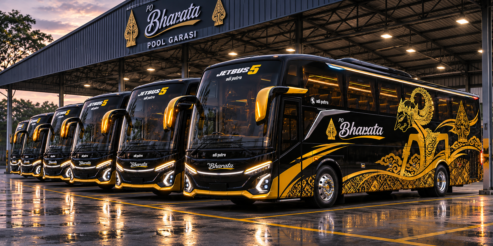

Diperiksa sebelum melaju
Proses pengecekan oleh teknisi menjadi bagian dari persiapan armada untuk perjalanan.
Setiap perjalanan punya cerita. Kami ingin langkah pertama Anda menuju tujuan terasa hangat, nyaman, dan penuh semangat Nusantara.
Bharata hadir dengan semangat menjadikan perjalanan antarkota sebagai bagian yang menyenangkan dari cerita Anda. Sejak mencari jadwal hingga memilih kursi, setiap langkah dirancang agar terasa sederhana dan jelas.
Warna hitam dan emas memberi karakter yang tenang dan elegan. Motif wayang menjadi sentuhan Nusantara yang menyertai perjalanan dari kota ke kota.
Temukan perjalanan AndaKeandalan perjalanan dimulai sebelum bus berangkat. Kesiapan armada menjadi perhatian melalui pengecekan teknisi dan pengelolaan uji KIR.

Proses pengecekan oleh teknisi menjadi bagian dari persiapan armada untuk perjalanan.
Jadwal dan persyaratan uji KIR diperhatikan sebagai bagian dari pengelolaan kesiapan kendaraan.
Perjalanan yang baik dimulai dari rasa diterima, bahkan sebelum bus berangkat.
Jadwal, rute, estimasi tiba, dan posisi kursi ditampilkan agar Anda dapat merencanakan perjalanan dengan tenang.
Motif wayang dan identitas Bharata membawa sentuhan budaya Indonesia ke dalam pengalaman perjalanan.